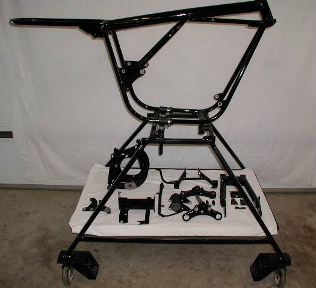
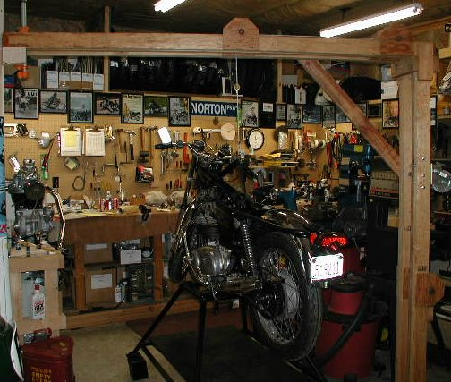
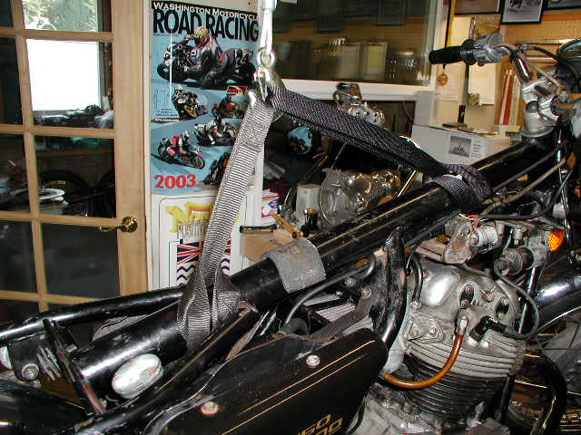
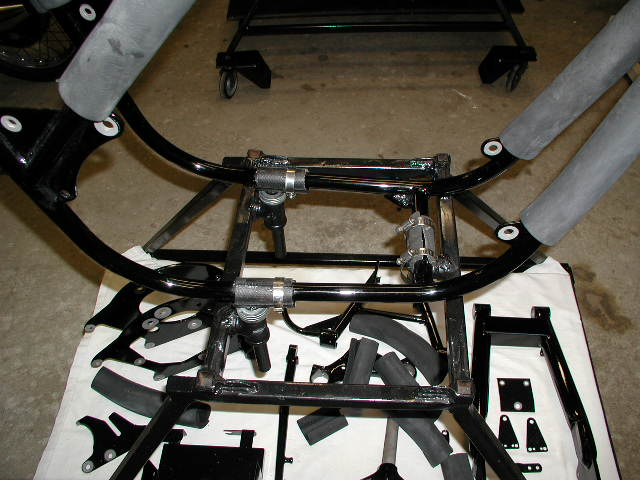
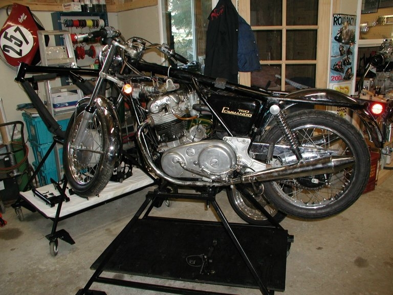

Assembling Frame on Building Stand

We have a couple stands on wheels as pictured above to build up bikes. The advantage of this type of a stand is the frame is mounted to the stand and the complete bike can be disassembled and assembled without moving the frame. Since most restorations or bike building take a period of time and most people have limited space, having the stand on wheels lets you move the project out of the way while not in use. The disadvantage of this stand is it is not hydrolic and you will need some way to remove the completed bike from the stand. We have used a come-a-long over a garage door header, a braced up ceiling rafter or a temporary wooden frame as pictured below to remove bikes from our stands. You could mount the frame to a stand and complete it enough to have a rolling chassis, then lift it off the stand with help from a friend.


We use hose clamps to mount our frames. With the three mounting points very near the center (one each on the bottom frame loop and one on the rear cross member connecting the bottom frame loops) everything is very secure throughout the project.


Any stand that is strong enough to hold the completed bike (a little over 400 pounds) and short enough to have the wheels stick out will work.
There are several lift stands on the market that lift the frame and a bench lift stand that lifts the whole bike can be made to work.
A friend uses a Craftsman folding table with a strap from the top frame tube to a ceiling rafter to steady the project.
You do need to have a stand that will not tip over or a strap to the ceiling. As you can see our stands are much wider
at the base in a pyramid shape.
The bottom frame loop needs to be at least 2 1/2" above the top of the stand so the exhaust pipes can be mounted.
Return to Old Britts home page
This page was written and designed by F. H. Eaton & Associates if you have any questions or comments please contact us at info@fheaton.com